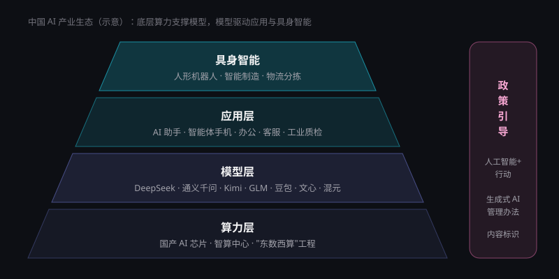

中国 AI 专题
从"百模大战"到开源模型走向全球，从政策引导到人形机器人量产，中国已成为全球人工智能版图中不可或缺的一极。
关键数字
来源：工业和信息化部（2026 世界人工智能大会新闻发布会）；斯坦福 HAI《2026 AI Index》
产业生态全景
中国 AI 产业已形成从底层算力、基础模型到上层应用与具身智能的完整链条，政策在各层之间起到引导与规范作用。
四层结构，层层支撑
算力层是地基。在高端芯片进口受限的背景下，国产 AI 芯片与"东数西算"布局的智算中心承担着保障算力供给的重任。
模型层是核心。以 DeepSeek、通义千问为代表的开源模型，让中国在全球大模型竞争中占据了独特位置——不仅自己用，也被全球开发者广泛下载和改进。
应用层与具身智能是价值出口。庞大的用户市场与齐全的制造业门类，为 AI 助手、智能体手机以及人形机器人提供了丰富的落地场景。

政策脉络
我国 AI 政策大致沿着"战略规划—安全规范—全面赋能"的路径演进。
| 时间 | 政策 / 事件 | 要点 |
|---|---|---|
| 2017 年 7 月 | 《新一代人工智能发展规划》 | 提出"三步走"战略，目标到 2030 年成为世界主要人工智能创新中心 |
| 2022 年 2 月 | "东数西算"工程全面启动 | 统筹布局全国算力枢纽与数据中心集群 |
| 2023 年 8 月 | 《生成式人工智能服务管理暂行办法》施行 | 全球较早针对生成式 AI 的专门规章，确立备案与安全评估要求 |
| 2023 年 10 月 | 《全球人工智能治理倡议》 | 倡导以人为本、智能向善，推动全球治理合作 |
| 2024 年 3 月 | 政府工作报告提出"人工智能+"行动 | 推动 AI 与实体经济深度融合 |
| 2025 年 8 月 | 国务院《关于深入实施"人工智能+"行动的意见》 | 部署科技、产业、消费、民生、治理等领域的 AI 赋能行动 |
| 2025 年 9 月 | 《人工智能生成合成内容标识办法》施行 | 要求对 AI 生成的文字、图片、音视频进行显式或隐式标识 |
大模型生态
中国大模型呈现"开源领先、应用繁荣"的特点。以下为部分代表性厂商与模型（排名不分先后）。
| 厂商 | 代表模型 / 产品 | 主要特点 |
|---|---|---|
| 深度求索 | DeepSeek-V3、DeepSeek-R1 | 开源、训练成本低，R1 推动推理模型普及 |
| 阿里巴巴 | 通义千问（Qwen） | 开源模型家族规模大、衍生模型众多 |
| 月之暗面 | Kimi | 长上下文与智能体能力，开源 Kimi K2 系列 |
| 智谱 | GLM 系列 | 持续开源，聚焦智能体与编程能力 |
| 字节跳动 | 豆包 | 用户规模领先的 AI 助手，多模态能力强 |
| 百度 | 文心 | 与搜索、自动驾驶（萝卜快跑）等业务深度结合 |
| 腾讯 | 混元 | 与社交、办公、游戏生态结合 |
| MiniMax | 海螺等 | 多模态与视频生成见长 |
算力与基础设施
国产 AI 芯片
以华为昇腾等为代表的国产加速芯片加快迭代，配套软件生态逐步完善，是保障算力自主可控的关键。
智算中心
依托"东数西算"布局，各地建设智能计算中心，推动算力像水电一样按需调度。
开源社区
国内开源平台与模型社区快速成长，为模型分发、协作开发和人才培养提供土壤。
人形机器人：从舞台走进工厂
2025 年春晚上，宇树科技的人形机器人扭秧歌引发全民关注；同年 8 月，北京举办世界人形机器人运动会。短短一年多，人形机器人就从"表演"走向"干活"。
在 2026 世界人工智能大会上，具身智能展区的重点已转向真实场景的动态实操：机械臂完成汽车零部件装配，人形机器人自主完成物流分拣。工信部预计，2026 年我国人形机器人整机产量有望突破 10 万台。宇树、优必选、智元等企业是这一赛道的代表。
国际比较中的中国
优势
- AI 论文发表量、引用量与专利总量全球领先
- 开源模型具有全球影响力
- 制造业门类齐全，具身智能落地场景丰富
- 庞大的用户市场与应用创新活跃
短板
- 高端 AI 芯片与先进制程受限
- 高影响力专利与顶级模型数量仍少于美国
- 以市场化私募投资衡量的资本规模差距明显